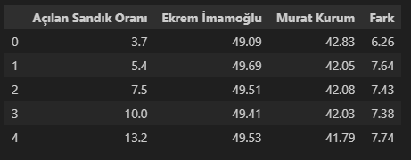
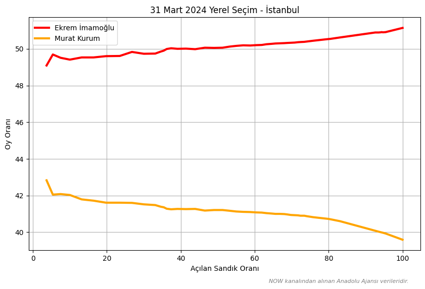
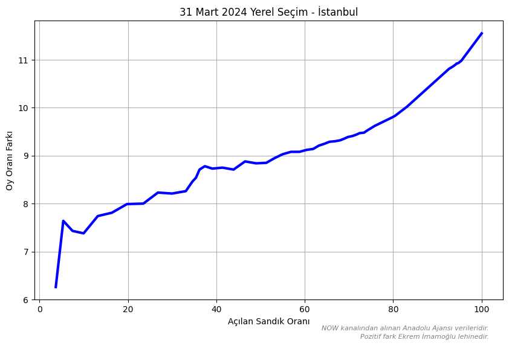
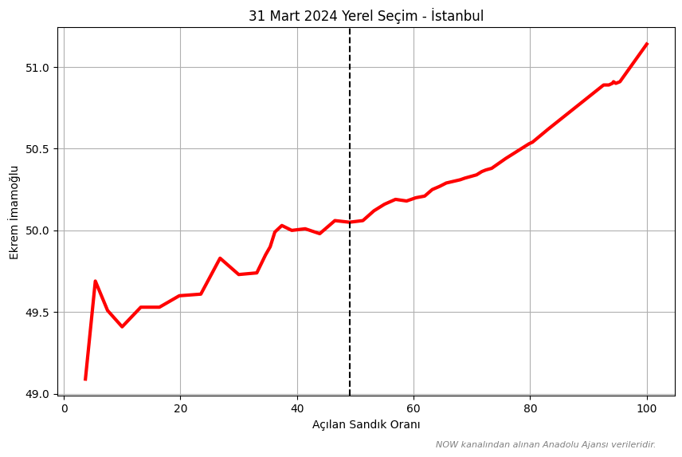
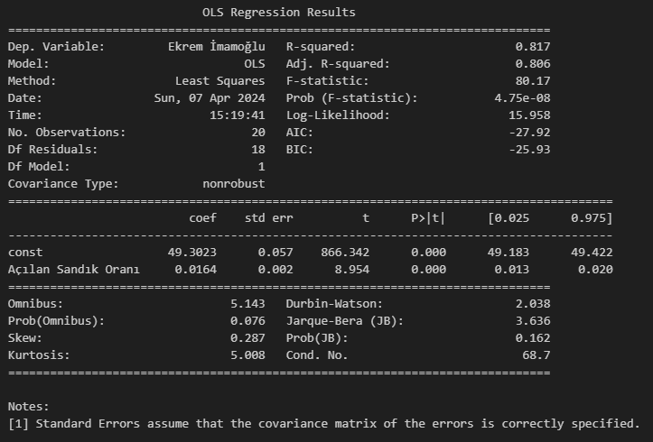
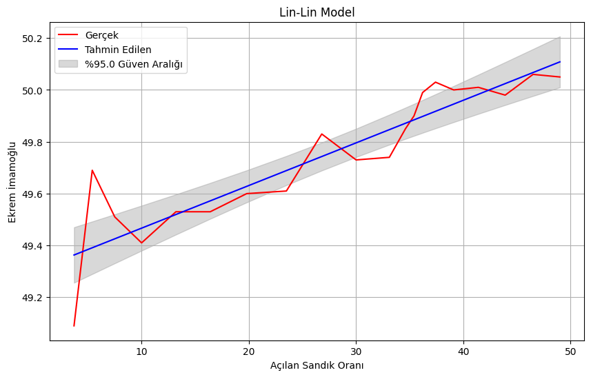
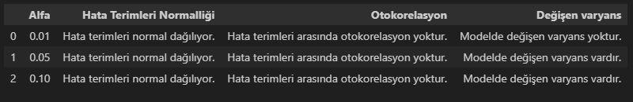
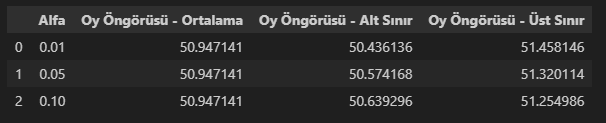
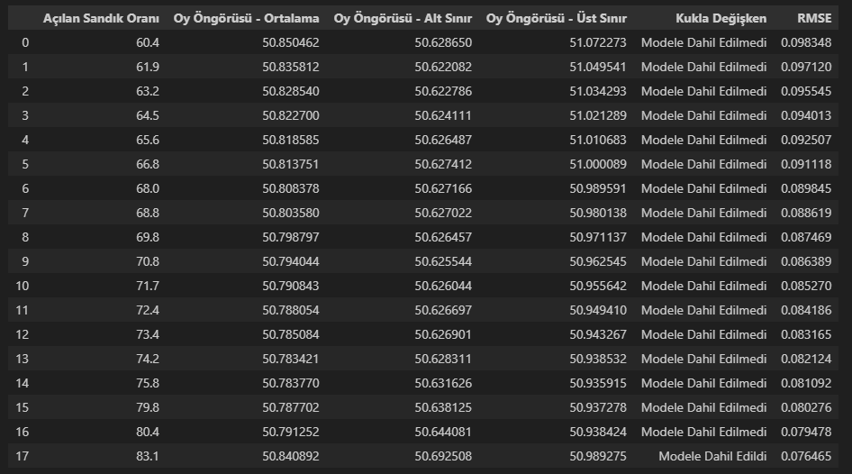

import json
import pandas as pd
import numpy as np
import statsmodels.api as sm
from scipy.stats import shapiro
import statsmodels.stats.diagnostic as dg
import matplotlib.pyplot as pltGiriş
Seçim öngörüleri için seçim anketlerini kullanabilir veya seçim sonucuna etkisi olan değişkenler ile modelleme yapabiliriz. Modellemeye seçim anketleri de dahil edilebilir pek tabi.
Yukarıdaki iki yönteme ek olarak, seçim akşamı gelen veri akışı da hangi adayın/partinin ne kadarlık bir oy alacağı noktasında öngörüde bulunmamıza yardımcı olabilir. Bu yöntem, diğer yöntemlere göre daha kısa vadelidir. Çünkü veriler seçim akşamı alınabilmektedir. Amacı ise daha akışın başında hem oy oranlarının gidişatını kontrol edebilmek hem de öngörüde bulunabilmektir. Peki, bu yöntemde başarılı bir öngörü nasıl olur? Bunu üç kritere bağlıyorum: Gerçek sonuca yakın, istikrarlı güncellemeye sahip ve öngörüsü olabildiğince erkenden yapılan. Nedenlerini açıklayayım.
- Öngörümüzün gerçek sonuca yakın olmasını isteriz. Gerçekten uzak bir öngörü kimseyi tatmin etmez.
- Model güncellenebilir ancak güncellenen modelin güven de vermesi gerekir. Oynaklık seviyesi yüksek bir güncelleme modele olan güveni düşürecektir.
- Gerçeğe yakın bir öngörü veri akışının başında da yapılabilir sonunda da. Veri akışının başında yapılan gerçeğe yakın öngörü daha anlamlı olacaktır.
Kullanılacak Kütüphaneler
Veri Setinin İçe Aktarılması
Yapacağımız uygulamada İstanbul ilini ve Anadolu Ajansı verilerini baz alacağız. Verileri 31 Mart 2024 akşamı izlediğim NOW kanalından aldım. Veri seti, açılan sandık oranı ve adayların oy oranları ile aralarındaki farkları içermektedir. Veri setine buradan ulaşabilirsiniz.
with open('aa_20240331_istanbul.json', 'r', encoding='utf-8') as file:
data = json.load(file)
df = pd.DataFrame(data['Data'])
print(df.head())
Açılan Sandık Oranlarına Göre Adayların Oy Oranları ve Aralarındaki Farklar
plt.figure(figsize=(10, 6))
plt.plot(
df['Açılan Sandık Oranı'],
df['Ekrem İmamoğlu'],
label='Ekrem İmamoğlu',
color='red',
linewidth=3
)
plt.plot(
df['Açılan Sandık Oranı'],
df['Murat Kurum'],
label='Murat Kurum',
color='orange',
linewidth=3
)
plt.xlabel('Açılan Sandık Oranı')
plt.ylabel('Oy Oranı')
plt.title('31 Mart 2024 Yerel Seçim - İstanbul')
plt.text(
0.97,
-0.14,
'NOW kanalından alınan Anadolu Ajansı verileridir.',
color='gray',
fontsize=8,
fontstyle='italic',
ha='right',
transform=plt.gca().transAxes
)
plt.legend()
plt.grid(True)
plt.show()
Anadolu Ajansı geçmiş seçimlerde, gözlemlediğimiz üzere, veri akışını AKP ve ittifak ortaklarının adayları lehine başlatmıştır. 31 Mart 2024 yerel seçimlerinde ise CHP’nin adayı Ekrem İmamoğlu lehine başlamıştır. Anadolu Ajansı’nın geçmiş veri akışlarını göz önüne aldığımızda, bu başlangıç hem Ekrem İmamoğlu’nun seçimi kazanacağını hem de rakibi Murat Kurum’a fark atacağını göstermekteydi. Nitekim 11.55 puanlık fark ile öyle de oldu.
plt.figure(figsize=(10, 6))
plt.plot(
df['Açılan Sandık Oranı'],
df['Fark'],
color='blue',
linewidth=3
)
plt.xlabel('Açılan Sandık Oranı')
plt.ylabel('Oy Oranı Farkı')
plt.title('31 Mart 2024 Yerel Seçim - İstanbul')
plt.text(
0.97,
-0.14,
'NOW kanalından alınan Anadolu Ajansı verileridir.\nPozitif fark Ekrem İmamoğlu lehinedir.',
color='gray',
fontsize=8,
fontstyle='italic',
ha='right',
transform=plt.gca().transAxes
)
plt.grid(True)
plt.show()
Modelin Geliştirilmesi
Veri setimizde bulunan gözlem sayısı 50’dir ancak biz tamamını kullanmayacağız. Öngörülerimizi olabildiğince erken yapmalıyız. Bunun için açılan sandık oranının aşağı yukarı %50 olmasını bekleyebiliriz. Bu da 20 adet gözlem sayısına denk gelecektir. Oldukça küçük fakat kullanılamaz değil.
Öngörü için regresyon modellerini kullanacağız.
dependent_variable='Ekrem İmamoğlu'
independent_variable='Açılan Sandık Oranı'
ballot_box_rate=50
main_df = df[df[independent_variable] <= ballot_box_rate][[independent_variable, dependent_variable]]Regresyon modelinde dependent_variable Ekrem İmamoğlu, independent_variable Açılan Sandık Oranı olacak. Burada Ekrem İmamoğlu oylarının açılan sandık oranlarına bağımlı olduğunu varsayıyoruz.
Başlamadan önce Ekrem İmamoğlu’nun oy grafiğini görelim.
plt.figure(figsize=(10, 6))
plt.plot(
df[independent_variable],
df[dependent_variable],
color='red',
linewidth=3
)
plt.axvline(x=main_df[independent_variable].iloc[-1], color='black', linestyle='--')
plt.xlabel(f'{independent_variable}')
plt.ylabel(f'{dependent_variable}')
plt.title('31 Mart 2024 Yerel Seçim - İstanbul')
plt.text(
0.97,
-0.14,
'NOW kanalından alınan Anadolu Ajansı verileridir.',
color='gray',
fontsize=8,
fontstyle='italic',
ha='right',
transform=plt.gca().transAxes
)
plt.grid(True)
plt.show()
Grafikte X ekseninde dikey bir çizgi bulunmaktadır. Bu çizginin sol tarafını kullanacak ve sağ tarafını hiç görmediğimizi varsayacağız.
Her iki değişkenin de doğrusal olduğu regresyon modelini kurarak başlayalım.
y = main_df[dependent_variable]
X = main_df[independent_variable]
X = sm.add_constant(X)
model_linlin = sm.OLS(y, X).fit()
print(model_linlin.summary())Tahminleri güven aralığı değerleri ile alalım.
alpha=0.05
predictions = model_linlin.get_prediction(X).summary_frame(alpha)
predictions_mean = predictions['mean']
predictions_lower = predictions['mean_ci_lower']
predictions_upper = predictions['mean_ci_upper']Hata terimlerini alalım.
residuals = model_linlin.resid
Sıfıra oldukça yakın p değerlerine sahip const kesme terimi ve Açılan Sandık Oranı değişkeni katsayılarının istatistiksel olarak anlamlı olduğunu söyleyebiliriz. Ayrıca, yaklaşık olarak %82’lik bir \(R^2\) yakaladık ki 0-1 ya da 0-100 aralığında değer aldığını düşünürsek bu iyi bir orandır. Regresyon modelindeki Açılan Sandık Oranı değişkeni sıfır olduğunda Ekrem İmamoğlu’nun oy oranı %49.3 olmaktadır. Buna ek olarak, Açılan Sandık Oranı değişkenindeki 1 puanlık artış Ekrem İmamoğlu oyunu ortalamada 0.0164 puan artırmaktadır.
%95 güven aralığında gerçek ve tahmin edilen değerleri görelim.
plt.figure(figsize=(10,6))
plt.plot(X.iloc[:, 1], y, color='red', label='Gerçek')
plt.plot(X.iloc[:, 1], predictions_mean, color='blue', label='Tahmin Edilen')
plt.fill_between(X.iloc[:, 1], predictions_lower, predictions_upper, color='gray', alpha=0.3, label=f'%{100-alpha*100} Güven Aralığı')
plt.xlabel(f'{independent_variable}')
plt.ylabel(f'{dependent_variable}')
plt.title('Lin-Lin Model')
plt.legend()
plt.grid(True)
plt.show()
Modelimiz fena durmasa da varsayımları sağlayıp sağlamadığına bakalım.
Hata terimleri normal dağılmaktadır.
sw_statistic, sw_p_value = shapiro(residuals)
if sw_p_value >= alpha:
print('Hata terimleri normal dağılıyor.')
else:
print('Hata terimleri normal dağılmıyor.')Hata terimlerinde otokorelasyon bulunmamaktadır.
bg_test_statistic, bg_p_value, _, _ = dg.acorr_breusch_godfrey(model_linlin, nlags=5)
if bg_p_value >= alpha:
print('Hata terimleri arasında otokorelasyon yoktur.')
else:
print('Hata terimleri arasında otokorelasyon vardır.')Modelde, alpha değerini 0.01 aldığımızda değişen varyans bulunmamaktadır.
bp_test_statistic, bp_p_value, _, _ = dg.het_breuschpagan(residuals, model_linlin.model.exog)
if bp_p_value <= 0.01: # alpha
print('Modelde değişen varyans vardır.')
else:
print('Modelde değişen varyans yoktur.')Ekrem imamoğlu için oy öngörüsünde bulunalım.
X_value = [1, 100]
forecasts = model_linlin.get_prediction(X_value).summary_frame(alpha)
forecasted_vote_mean = forecasts['mean']
forecasted_vote_lower = forecasts['obs_ci_lower']
forecasted_vote_upper = forecasts['obs_ci_upper']
print(f'Oy Öngörüsü: %{forecasted_vote_mean.item():.2f}\nOy Öngörüsü Aralığı: %{forecasted_vote_lower.item():.2f} - %{forecasted_vote_upper.item():.2f}')%50.57 - %51.32 öngörü aralığında %50.95’lik bir oy öngörüsünde bulunabiliriz. Gerçek oy oranı %51.14’tür. Öngörü, gerçek oyun yaklaşık 0.19 puan kadar altında kalmıştır ancak fena olmadığını söyleyebiliriz. Bu öngörüyü açılan sandık oranı %49 iken yaptık.
Sonraki seçimlerde pratik bir şekilde kullanmak için buraya kadar yaptığımız modelleme işlemlerini bir fonksiyona dönüştürelim.
def modeling_and_forecasting(df, dependent_variable, independent_variable, ballot_box_rate=50, alphas=(0.01, 0.05, 0.1)):
main_df = df[df[independent_variable] <= ballot_box_rate][[independent_variable, dependent_variable]]
y = main_df[dependent_variable]
X = main_df[independent_variable]
X = sm.add_constant(X)
model_linlin = sm.OLS(y, X).fit()
print(model_linlin.summary())
predictions = [model_linlin.get_prediction(X).summary_frame(alpha) for alpha in alphas]
predictions_mean = [pred['mean'] for pred in predictions]
predictions_lower = [pred['mean_ci_lower'] for pred in predictions]
predictions_upper = [pred['mean_ci_upper'] for pred in predictions]
residuals = model_linlin.resid
sw_statistic, sw_p_value = shapiro(residuals)
h_normal = ['Hata terimleri normal dağılıyor.' if sw_p_value >= alpha else 'Hata terimleri normal dağılmıyor.' for alpha in alphas]
bg_test_statistic, bg_p_value, _, _ = dg.acorr_breusch_godfrey(model_linlin, nlags=5)
h_autocorrelation = ['Hata terimleri arasında otokorelasyon yoktur.' if bg_p_value >= alpha else 'Hata terimleri arasında otokorelasyon vardır.' for alpha in alphas]
bp_test_statistic, bp_p_value, _, _ = dg.het_breuschpagan(residuals, model_linlin.model.exog)
h_heteroscedasticity = ['Modelde değişen varyans vardır.' if bp_p_value <= alpha else 'Modelde değişen varyans yoktur.' for alpha in alphas]
assumptions_table = {
'Alfa': alphas,
'Hata Terimleri Normalliği': h_normal,
'Otokorelasyon': h_autocorrelation,
'Değişen varyans': h_heteroscedasticity
}
assumptions_table_df = pd.DataFrame(assumptions_table)
X_value = [1, 100]
forecasts = [model_linlin.get_prediction(X_value).summary_frame(alpha) for alpha in alphas]
forecasted_vote_mean = [forecast['mean'].item() for forecast in forecasts]
forecasted_vote_lower = [forecast['obs_ci_lower'].item() for forecast in forecasts]
forecasted_vote_upper = [forecast['obs_ci_upper'].item() for forecast in forecasts]
forecast_table = {
'Alfa': alphas,
'Oy Öngörüsü - Ortalama': forecasted_vote_mean,
'Oy Öngörüsü - Alt Sınır': forecasted_vote_lower,
'Oy Öngörüsü - Üst Sınır': forecasted_vote_upper
}
forecast_table_df = pd.DataFrame(forecast_table)
return assumptions_table_df, forecast_table_df
assumptions_df, forecast_df = modeling_and_forecasting(
df,
dependent_variable='Ekrem İmamoğlu',
independent_variable='Açılan Sandık Oranı'
)

Açılan sandık oranı %60 olduğunda modeli kontrol etmeye başlayabiliriz. Bundan sonrasında %90’a kadar her yeni veri akışında modeli takip edeceğiz. Peki, nasıl?
Modelimizin bağımsız değişken tarafına kukla değişken ekleyeceğiz. Böylece modelde herhangi bir kırılım olup olmadığını inceleyeceğiz. Eğer kırılım varsa modeli kukla değişkenli kuracağız. Bunun yanında, RMSE (Root Mean Squared Error, Kök Ortalama Kare Hatası) değerlerini de hesaplayacağız.
\(\mathrm{RMSE} = \sqrt{\frac{1}{n} \sum_{i=1}^{n} (y_i - \hat{y}_i)^2}\)
# Aşağıda pas geçilen varsayımlar bir önceki fonksiyonda olduğu gibi eklenebilir.
def update_modeling_and_forecasting(df, ballot_box_rate, alpha=0.1):
updated_df = df[df['Açılan Sandık Oranı'] <= ballot_box_rate][['Açılan Sandık Oranı', 'Ekrem İmamoğlu']]
updated_df['Dummy'] = [0 if i < 20 else 1 for i in range(len(updated_df))]
y = updated_df['Ekrem İmamoğlu']
X = updated_df[['Açılan Sandık Oranı','Dummy']]
X = sm.add_constant(X)
model_linlin = sm.OLS(y, X).fit()
dummy_p_value = model_linlin.pvalues['Dummy']
if dummy_p_value <= alpha:
X_value = [1, 100, 1]
dummy_significance = 'Modele Dahil Edildi'
else:
X = X.drop(columns=['Dummy'])
model_linlin = sm.OLS(y, X).fit()
X_value = [1, 100]
dummy_significance = 'Modele Dahil Edilmedi'
forecasts = model_linlin.get_prediction(X_value).summary_frame(alpha)
forecasted_vote = forecasts['mean'].iloc[0]
forecasted_vote_lower = forecasts['obs_ci_lower'].iloc[0]
forecasted_vote_upper = forecasts['obs_ci_upper'].iloc[0]
rmse = np.sqrt(np.mean((y - model_linlin.predict(X))**2))
return forecasted_vote, forecasted_vote_lower, forecasted_vote_upper, dummy_significance, rmse
min_ballot_box_rate=60
max_ballot_box_rate=90
ballot_box_rate = df[(df['Açılan Sandık Oranı'] >= min_ballot_box_rate) & (df['Açılan Sandık Oranı'] <= max_ballot_box_rate)]['Açılan Sandık Oranı'].tolist()
forecast_dfs = []
for turnout in ballot_box_rate:
forecasted_vote, forecasted_vote_lower, forecasted_vote_upper, dummy_significance, rmse = update_modeling_and_forecasting(df, turnout)
forecast_df = pd.DataFrame({
'Açılan Sandık Oranı': [turnout],
'Oy Öngörüsü - Ortalama': [forecasted_vote],
'Oy Öngörüsü - Alt Sınır': [forecasted_vote_lower],
'Oy Öngörüsü - Üst Sınır': [forecasted_vote_upper],
'Kukla Değişken': [dummy_significance],
'RMSE': [rmse]
})
forecast_dfs.append(forecast_df)
forecast_df = pd.concat(forecast_dfs, ignore_index=True)
print(forecast_df)Açılan sandık oranı %83.1 olduğunda istatistiksel olarak anlamlı bir kırılım yaşandığını görüyoruz. Bu noktada öngörülerimizi kukla değişkenli yapıyoruz. Açılan sandık oranı %60.4 iken 0.098 olan RMSE değerini açılan sandık oranı %83.1’e geldiğinde 0.076’ya düşürüyoruz. Bu model ile daha önce yapılan öngörüyü %50.84’e revize edebiliriz. Gerçek oy oranı %51.14’tür. Öngörü, gerçek oyun yaklaşık 0.3 puan kadar altında kalmıştır.

Gelecek içeriklerde görüşmek dileğiyle.